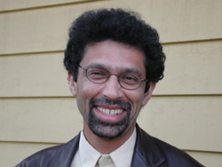

ADEEB KHALID, a Guggenheim Fellow, is professor of Russian and Central Asian history at Carleton College in Northfield, Minnesota. A graduate of Government College, Lahore, and McGill University, Montreal, he received his Ph.D. from the University of Wisconsin-Madison. His most recent book is Islam after Communism: Religion and Politics in Central Asia (Berkeley: Univ. of Calif. Pr., 2007). |
 |
PHOTO BY M.U. MEMON
|